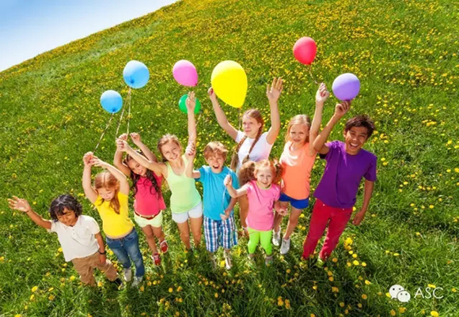
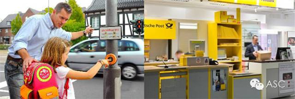
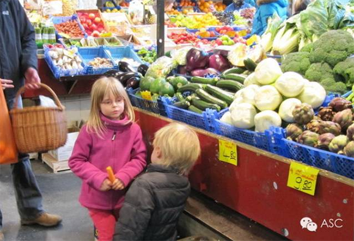
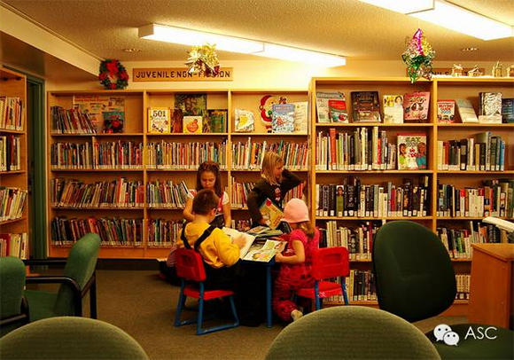
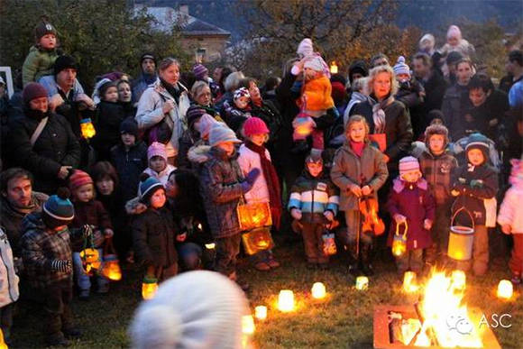

互惠动态
|
|
还孩子一个快乐童年！
提示：点击上方"ASC"↑免费订阅本刊

在这个竞争日益激烈的时代里，越来越多的小朋友在上幼儿园时就学拼音，学英语，学珠心算，学诗歌，学朗诵，学绘画，学舞蹈……甚至有些家长已经让孩子开始学钢琴，学书法，学击剑等“高大上”项目。我们的孩子越来越多才多艺，可孩子的创造力与想象力却也日益不见了踪影。
下面，请跟随小编，把视线转到德国幼儿园去。德国的幼儿园，小朋友们都学些什么呢？
* 参观警察局，学习如何报警，如何处理遇到坏人的情形；
* 参观消防警察局，跟消防警察们一起学习灭火知识、躲避火灾的常识；
* 参观邮局，看看一封信是如何从家里到达邮局，又被投递出去的；
* 参观市政府，认识市长，看看这个为他们服务的市长是什么样子的；
* 也会跟随老师一起过马路，学习过马路的正确方式（小学生则是可以自行过马路回家）。

* 他们去自由市场，拿着钱，学习怎样买东西；
* 他们去看马戏、儿童歌剧和魔术，幼儿园也会请剧团到幼儿园表演，并邀请家长一同欣赏；
* 他们参观图书馆，学习如何借书、还书。幼儿园也会举行图书日，让孩子们挑选自己喜欢的图书；
* 小编参观过一个幼儿园，里面还有几只小乌龟，它们可是孩子们很好的玩伴呢；
* 他们还会去森林，背上自己的小背包，在森林里进行野炊，学习一些基本的求生技能，感受大自然；
* 秋天，他们会和老师一起扫落叶，冬天，一起堆雪人（如果下雪的话）。


* 圣诞节，圣尼古拉斯日，这是最激动的日子，他们焦急地等待圣诞老人的来临以及那份神秘的礼物。
* 圣马丁节，要跟老师一起糊纸灯，游街，高唱《圣·马丁》，来纪念这位骑士圣人，马丁。

另外，在德国，游泳是小学里面的必修课，而事实上，许多德国家长在孩子幼儿园的时候就将自己的孩子送去学习游泳了。一方面是培养孩子的兴趣，另一方面，他们认为，这是一项必要的求生技能。
3年幼儿园时光过去了，孩子们学会自己修理玩具，自己管理时间，自己约会，自己制定玩具，自己搭配衣服，自己整理东西，自己找警察。一个6岁的孩子，生活能力可以很强。他们很有自己的主见，有创造力、想象力，知道自己要做什么。
ASC视角：那么，既想让孩子多才多艺，又想让孩子了解这些你可能根本想不到或者没时间去教育孩子的技能，为何不请一位洋哥哥或洋姐姐（即互惠生）来陪您的孩子了解并且学习这些看似简单，却又陌生的新技能呢？Get！